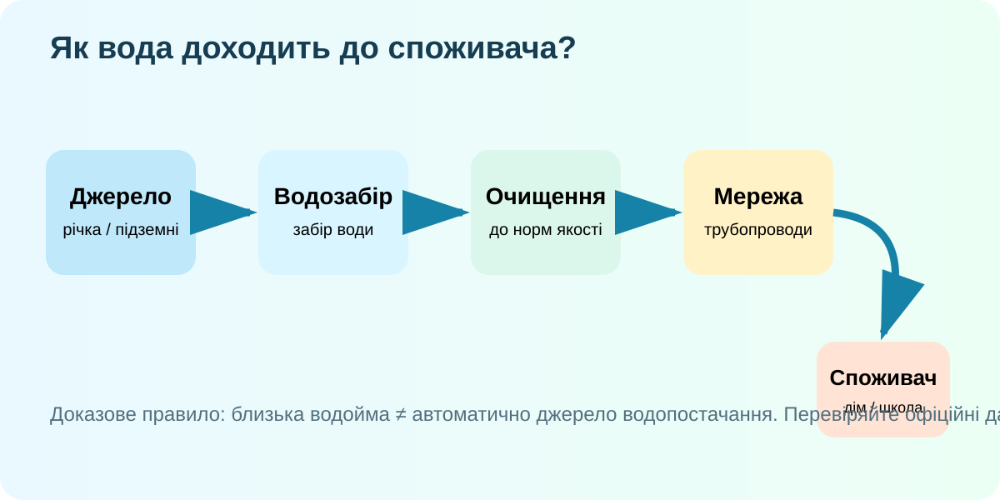
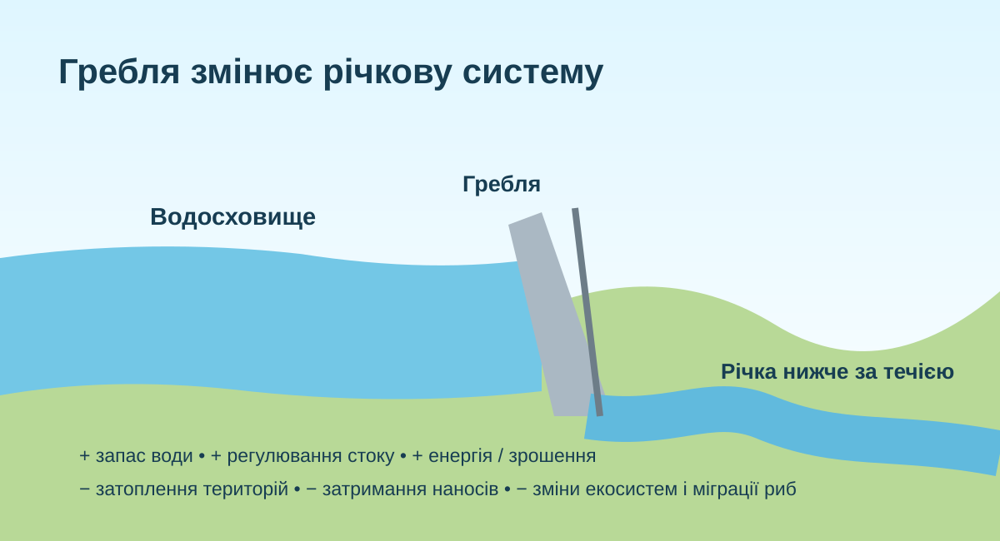

Куди зникає вода після крана?
Розташуйте етапи в логічному порядку. Не вчіть схему — відновіть її.
Звідки береться вода для населеного пункту?
Виберіть джерело

Доказове питання: чому «біля міста є річка» ще не доводить, що саме з неї місто отримує питну воду?
Куди потрапляють стічні води?
Модель умовна. Реальні очисні споруди контролюють конкретні показники якості води.
Що відбувається насправді?
Стічна вода з будинків зазвичай потрапляє в каналізаційну мережу і далі на очисні споруди, де великі домішки видаляють, тверді частинки осаджують, органічні забруднення розкладають біологічно, а воду за потреби знезаражують перед поверненням у довкілля.
USGS: Wastewater Treatment →«Будуємо греблю на річці»: мета, місце, наслідки

Гребля може давати воду й електроенергію, але змінює стік, перенесення наносів, температуру води, міграцію риб і затоплює території. Знайдіть не «правильну» відповідь, а компроміс, який можна обґрунтувати.
Штучні водойми видно з космосу і на карті
Підкладка OpenStreetMap. Перемикайте приклади й порівнюйте форму водосховищ та положення гребель.
Водосховище: користь і ціна рішення

Що змінюється?
- накопичується вода для періодів дефіциту;
- може вироблятися електроенергія;
- частина наносів затримується;
- змінюється природний режим стоку;
- можуть бути затоплені поселення й екосистеми.
Водні ресурси. Людина і гідросфера
Відкрийте короткий фрагмент уроку про водні ресурси та вплив людини на гідросферу.
Відкрити ВШО →Під час перегляду
Зафіксуйте 1 приклад використання води, 1 ризик і 1 спосіб зменшення шкоди.
Тепер формулюємо поняття
Водосховище
Штучна водойма, створена переважно греблею на річці для накопичення і регулювання води.
Канал
Штучний водотік для переміщення води, судноплавства, зрошення або осушення.
Водні ресурси
Води, придатні або потенційно придатні для потреб населення, господарства та екосистем.
Чи варто будувати нову греблю?
§46 + локальне дослідження
- Опрацюйте §46.
- Знайдіть офіційне джерело про водопостачання вашого населеного пункту: водоканал, міська/селищна рада, офіційний звіт.
- Накресліть маршрут: джерело → водозабір → очищення → мережа → споживач → каналізація → очисні споруди → водойма.